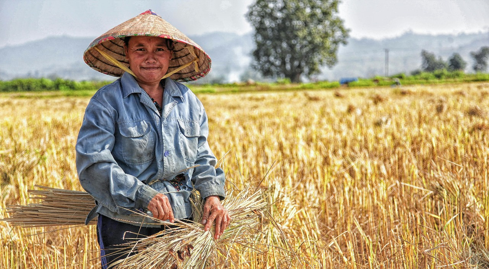
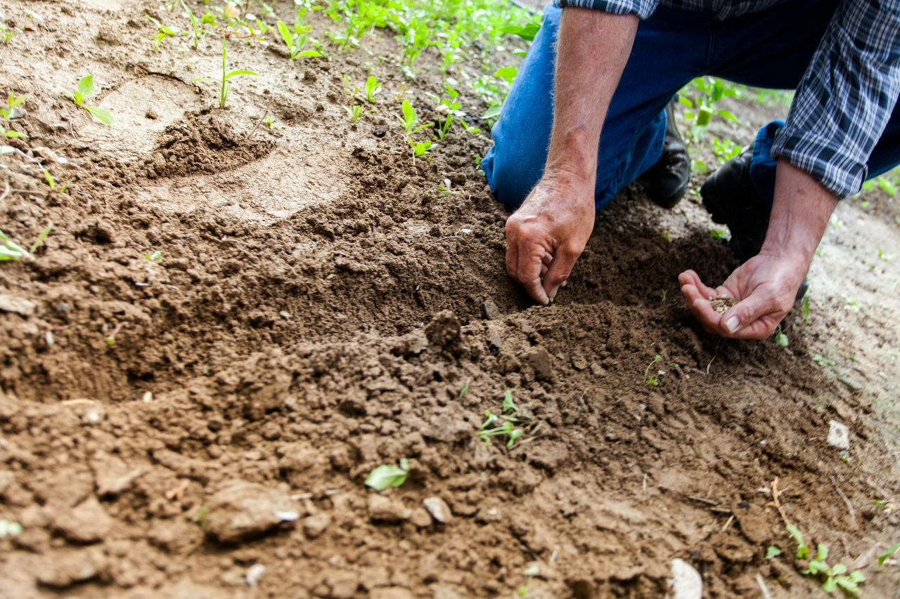

कृषिसमर्पण मध्ये आपले स्वागत आहे
शेतकऱ्यांना ज्ञान, संसाधने आणि तंत्रज्ञानाने सक्षम करणे
अधिक माहिती पहा
शेतकऱ्यांना ज्ञान, संसाधने आणि तंत्रज्ञानाने सक्षम करणे
अधिक माहिती पहाउत्पादकता आणि उत्पन्न वाढवण्यासाठी आधुनिक तंत्रे, बाजारपेठेतील अंतर्दृष्टी आणि संसाधने प्रदान करून शेतकऱ्यांना पाठिंबा देण्याचे आमचे उद्दिष्ट आहे.
आम्ही सेंद्रिय शेती पद्धतींसाठी प्रशिक्षण आणि संसाधने पुरवतो.
शेतकऱ्यांना खरेदीदारांशी जोडण्यास आणि योग्य किंमत मिळवण्यास मदत करणे
चांगल्या नियोजनासाठी रिअल-टाइम हवामान अद्यतने प्रदान करणे.
ताजी आणि रासायनिक-मुक्त भाज्या.
चांगल्या उत्पादनासाठी उत्तम बियाणे.
शाश्वत शेतीसाठी पर्यावरणपूरक खते.
हवामान माहिती लोड करत आहे...
कंपोस्ट, आच्छादन पिके वापरा आणि जमिनीची गुणवत्ता वाढवण्यासाठी पिकांची फेरपालट करा.
उपलब्ध नवीनतम अनुदान आणि आर्थिक मदत कार्यक्रम तपासा.
Email: support@farmershub.com
Phone: +91 9876543210